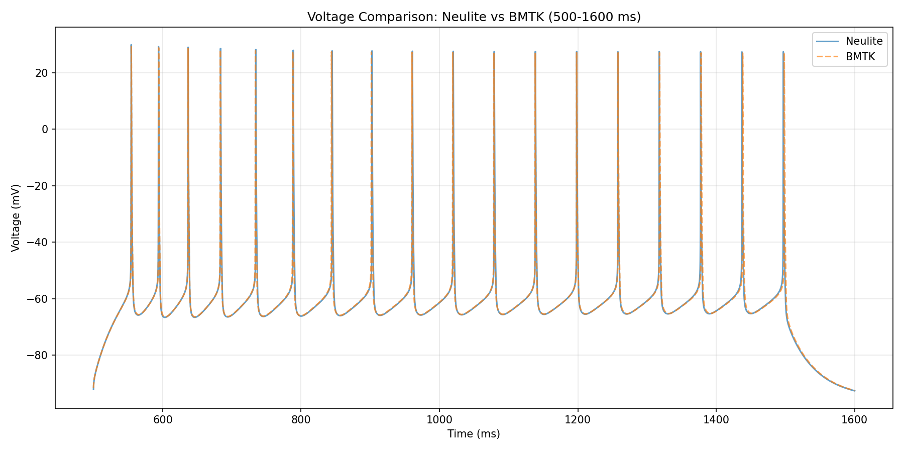

Tutorial 1: Steady-State Current Injection in a Single Cell
Overview
This tutorial demonstrates the simplest example of applying steady-state current injection to a single biophysical neuron.
Objectives
Understand the basic usage of bionet_lite
Learn how to initialize NeuliteBuilder
Build a network with a single neuron
Understand the structure of generated files
Prerequisites: Running the BMTK Tutorial
Important
Before starting this tutorial, you must first run the corresponding BMTK tutorial
Running the BMTK tutorial will automatically download the necessary data files (SWC files, JSON files, etc.). The execution of bionet_lite requires BMTK code and data files.
Execution Steps:
Run the BMTK Tutorial
First, run the following BMTK tutorial to completion:
Tutorial: Single Cell Simulation with Current Injection (with BioNet)
Run the bionet_lite Code Example
Once the BMTK tutorial is complete, proceed to the next section.
Changes from bionet to bionet_lite
Only the import statement needs to be changed. All other code remains exactly the same.
Before (BMTK):
from bmtk.builder.networks import NetworkBuilder
After (bionet_lite):
from bionetlite import NeuliteBuilder as NetworkBuilder
Code Example
from bionetlite import NeuliteBuilder as NetworkBuilder
# Create network
net = NetworkBuilder('mcortex')
# Add a single biophysical neuron
net.add_nodes(
N=1,
pop_name='Scnn1a',
model_type='biophysical',
model_template='ctdb:Biophys1.hoc',
dynamics_params='472363762_fit.json',
morphology='Scnn1a_473845048_m.swc'
)
# Build the network
net.build()
# Save to files
net.save_nodes(output_dir='sim_ch01/network')
Generated Files
The following files are generated in this simulation:
<network_name>_population.csv
A file containing population information that defines the biophysical properties of a single neuron.
id,pop_name,model_type,morphology,dynamics_params,...
0,Scnn1a,biophysical,Scnn1a_473845048_m.swc,472363762_fit.json,...
<src>_<trg>_connection.csv
A file containing synaptic connection information. Since no synaptic connections are defined in this tutorial, the file is empty (header only).
Note
A connection file is required to run the Neulite kernel. If no connections exist, an empty file is generated.
Processed SWC File
A preprocessed morphology file for Neulite is generated.
This file is processed according to the Perisomatic model and the following modifications are made:
Replace actual axon morphology with a simplified artificial axon
Convert to zero-based indexing
Sorting by depth-first search
Note
For details on the Perisomatic model, see Specifications and Limitations.
Files Generated by Neulite
bionet_lite generates files in the following directory:
If
base_diris set in the script:{base_dir}_nl/If
base_diris not set:neulite/
Directory Structure
sim_ch01_nl/ (または neulite/)
├── mcortex_population.csv
├── mcortex_mcortex_connection.csv
├── kernel/
│ └── config.h
└── data/
├── Scnn1a_473845048_m.swc
└── 472363762_fit.csv
mcortex_population.csv
A population file for Neulite. The column structure is as follows:
#n_cell,n_comp,name,swc_file,ion_file
1,3682,default_100_100,data/Scnn1a_473845048_m.swc,data/472363762_fit.csv
#n_cell: Number of cellsn_comp: Number of compartmentsname: Population nameswc_file: Path to SWC morphology fileion_file: Path to ion channel parameter file
mcortex_mcortex_connection.csv
A connection file for Neulite. Since there are no connections in this tutorial, a file with only the header is generated:
#pre nid,post nid,post cid,weight,tau_decay,tau_rise,erev,delay,e/i
kernel/config.h
A compilation-time configuration file for the Neulite kernel. It is automatically generated from BMTK’s config.json:
// Automatically generated by bionet_lite
#pragma once
// Simulation parameters
#define TSTOP ( 3000.0 )
#define DT ( 0.1 )
#define INV_DT ( ( int ) ( 1.0 / ( DT ) ) )
// Neuron parameters
#define SPIKE_THRESHOLD ( -15.0 )
#define ALLACTIVE ( 0 )
// Current injection parameters
#define I_AMP ( 0.1 )
#define I_DELAY ( 500.0 )
#define I_DURATION ( 500.0 )
This file contains the following parameters:
TSTOP: Simulation time (ms)DT: Time step (ms)INV_DT: Number of steps per millisecondSPIKE_THRESHOLD: Spike detection threshold (mV)I_AMP: Amplitude of current injection (nA)I_DELAY: Current injection start time (ms)I_DURATION: Duration of current injection (ms)
Note
Since config.h is used when building the Neulite kernel, recompiling the kernel is necessary if you modify this file.
Running the Neulite Kernel
Run the Neulite kernel using the generated files:
# Navigate to neulite directory
cd neulite
# Run Neulite kernel
./nl mcortex_population.csv mcortex_mcortex_connection.csv
Simulation Result Files
The following text files are generated after running the Neulite kernel:
s.dat - Spike Time Data
Space-delimited text format recording one spike event per line:
時刻(ms) ニューロンID
125.3 0
156.8 0
189.2 0
Column 1: Time at which spike occurred (ms)
Column 2: ID of the neuron that generated the spike
v.dat - Membrane Potential Data
Space-delimited text format recording membrane potential of all neurons per line:
時刻(ms) ニューロン0の膜電位 ニューロン1の膜電位 ...
0.0 -65.0 -65.0
0.1 -64.8 -64.9
0.2 -64.6 -64.8
Column 1: Time (ms)
Column 2 onwards: Soma membrane potential of each neuron (mV)
Note
These files are in text format (ASCII), so they can be easily loaded with Python’s numpy or pandas.
Comparison of Execution Results with BMTK
{kind=link}

Comparison plot of execution results between BMTK and Neulite at dt=0.025.
Next Steps
Tutorial 2: Spike Input Simulation - Simulation using spike input
Basic Usage - More detailed usage instructions
Note
Complete code examples and data files for this tutorial are available in the examples directory of the repository.